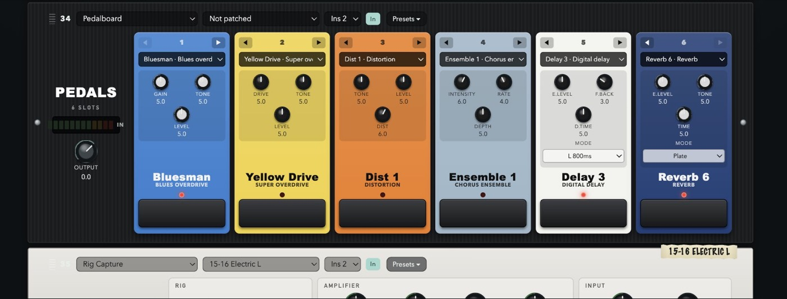
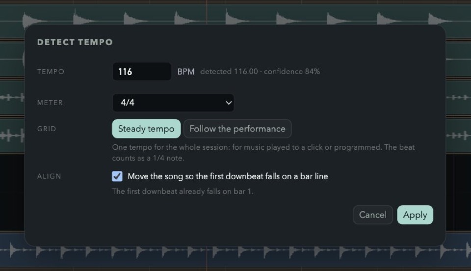
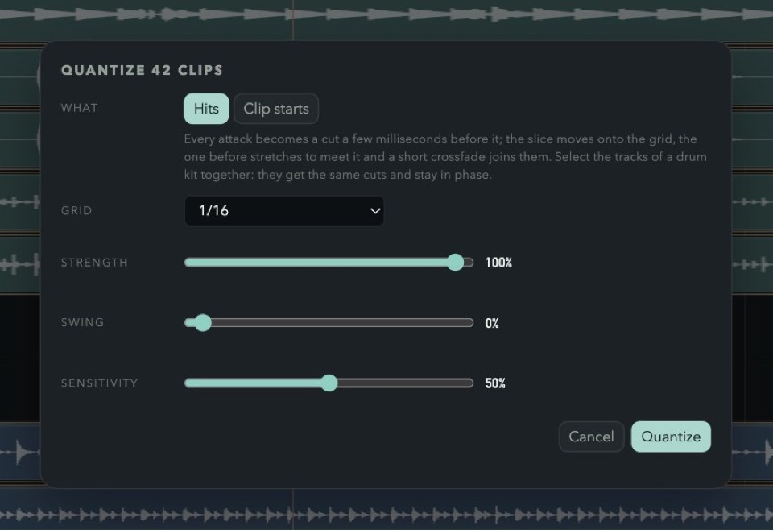
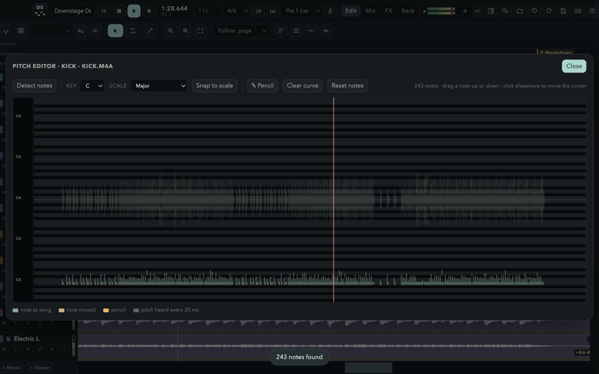
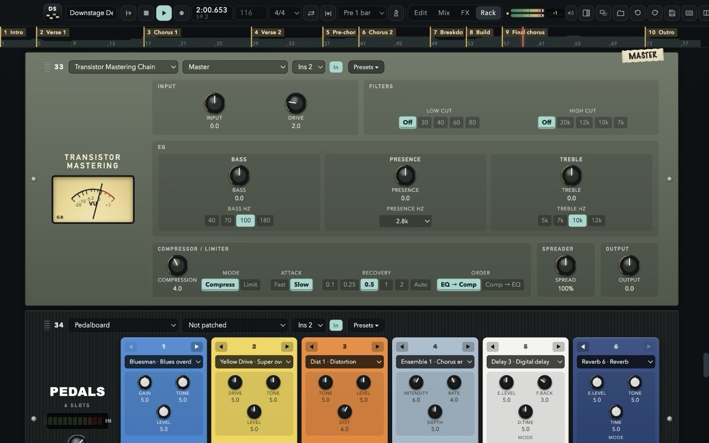
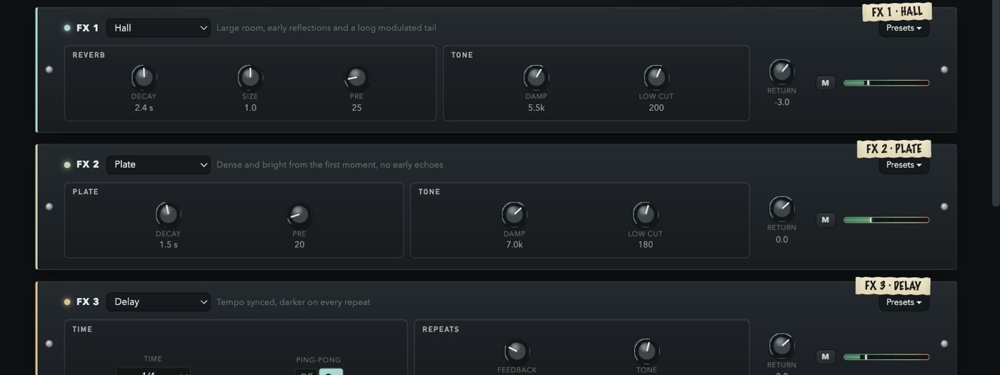
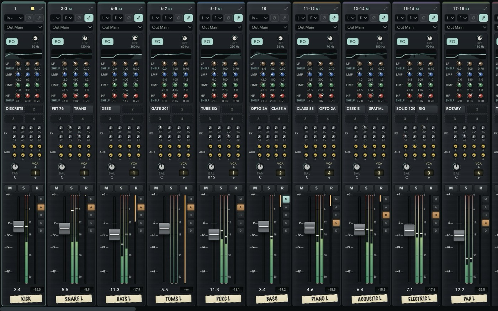
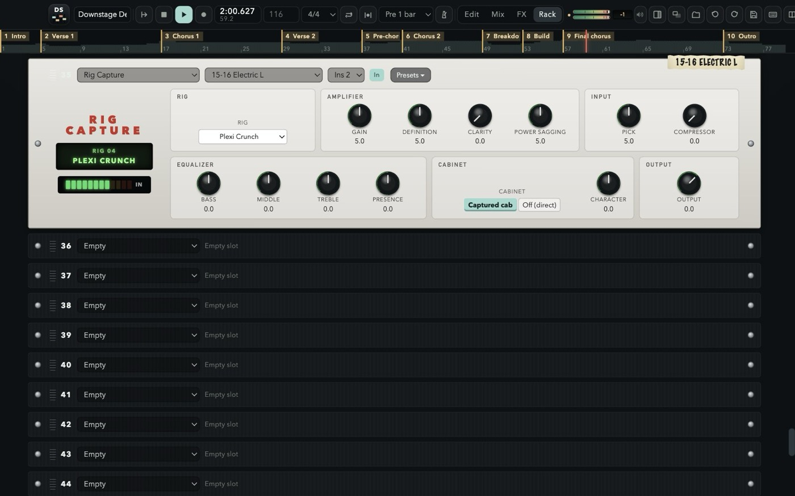
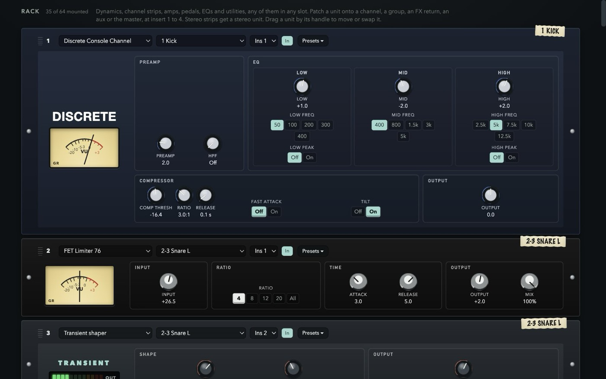
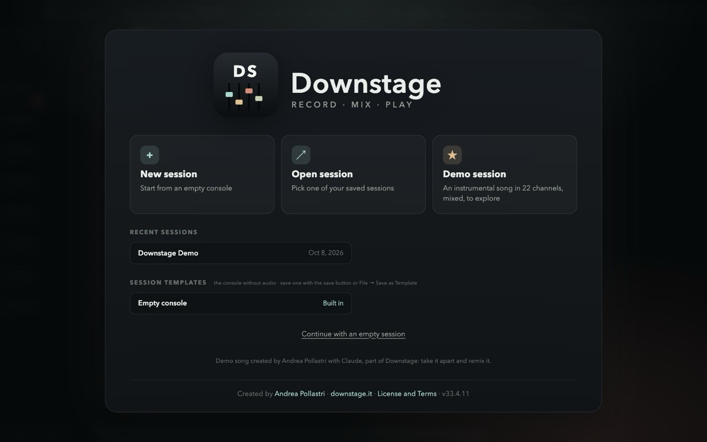

Downstage
Price$0 Free to record, mix and release.
Tracks48 channels.
65 rack units, 33 pedals and eight effect buses built in. No account. Apple Silicon, macOS 13 or later.
A multitrack recorder and an analog-style console in one window. 48 channels, a desk that lines up like the real thing, a 64-slot rack of 66 classic units, a 33-pedal board, tempo detection, quantize, a page on every screen — and a price tag of zero.

The desk, the outboard rack, the pedalboard on the floor, the reverb units in the machine room and the mastering chain down the corridor — all in one app, all free, all in the same session.

33 STOMPBOXEScompacts from Dist 1 to Synth 1 and the bass line, Big Fuzz, Green Drive, Analog Memory, Nebula, Tape Echo — six slots, any order.
TEMPO FROM THE AUDIOOne BPM, or a grid that follows the band.
QUANTIZE THE HITSCut at the attacks, phase-locked across the kit.
PITCH EDITORDetect the notes, drag them, snap to a scale, or draw with a pencil.
MASTERINGTransistor chain, Two Stage, Big Passive EQ, Sheen EQ.
CRYSTAL HALL + REMOTETwelve programs, six faders, the red display.
EVERY SCREENEdit, Mix, FX or Rack full screen on each display.
RIG CAPTURE & TUNERTwelve captured rigs, a tuner, an EQ tuned by note and scale.Every strip looks and works like a channel on a large-format console — and every strip has the same sections at the same height, so your eyes read the whole board at once.
High-pass, four fully parametric bands over a live analyser, four inserts, eight FX and eight aux sends, pan, a one-VCA selector and slim console faders with gain-reduction meters.
Four stereo groups that are full channel strips. Route any channel with the M and A–D buttons right beside its fader.
Eight stereo aux outputs, pre or post, with a seven-band EQ, the master into the phones and a click that stays out of the room.
Channels, click, groups, FX returns, VCAs, aux outputs and master, left to right, over the whole screen — or Mix, FX and Rack each on a display of their own. Solo a group or a return and its channels come with it; solo safe and AFL on the auxes, like a real desk.


Plug in a second and a third display and send Edit, Mix, FX or Rack to each, full screen, with no top bar — the arrangement in front of you, the whole console on one side, the rack on the other. Every screen plays the same session: move a fader on one and it moves everywhere. Close a screen with its × and the page is free to go to another.


Nothing you play is ever thrown away. Record over what is there and the old pass stays underneath; punch in on the fly or on a range with pre-roll; loop a section for as many passes as it takes. Then drag across the best moment of each take and press “Use this” — comping the way the big DAWs taught your hands, with markers where you expect them and the mix out of the door in WAV or MP3.


New passes land on top, drawn as you play; the old ones stay underneath and in the take list, ready to comp, in files named after the channel and the take.
Free punch while playing, auto punch on the loop range, 1–4 bars of pre-roll, loop recording.
Open the takes under a track, drag across the good bit of any of them and press “Use this”.
Find the BPM and the grid in the audio — steady, or bar by bar for a band without a click — then quantize the hits, phase-locked across a drum kit. Plus a click strip with its own EQ and headphone sends.
Memory locations: keypad Enter drops one, “. 3 .” jumps there, ⌘5 lists them all with the export range.
Detect the notes of a vocal or a bass, drag them to other notes, snap the whole clip to a key and scale, or draw the pitch you want with a pencil right on the waveform. Non-destructive, rendered live. A Pitch Corrector unit does it automatically on a live voice.
⌥-drag a clip's edge and it stretches or shrinks to the new length at the same pitch, from 25% to 400%, without touching the file. Splits, trims, loops and quantize follow it.
A post-it under the inserts of every channel — the mic, the take to keep, what is still to do — saved with the session as you type, with a dot on the strip when there is one.
The mix, every stem or every output, of the song, the IN–OUT range or the loop, with a real progress bar.
The metronome in the edit bar listens to your session and finds the BPM, the beat and the first downbeat. Steady tempo for music played to a click; Follow the performance for a band that breathes — a tempo for every bar, so the grid follows them.
Then press Q. Every attack is cut a few milliseconds before it and moved onto the grid, the slice before stretches to meet it and a short crossfade joins them. Select the whole kit: every track gets the same cuts and stays in phase.
Patch outboard onto any insert of any strip. Each faceplate is laid out like the hardware, carries a strip of masking tape with the channel it lives on, and opens a menu of factory presets chosen for what that box does best — plus your own, in every session.

Mount the pedalboard on a DI guitar or bass: six slots in the order of the chain, any of 33 classic compacts in each, every knob where it sits on the real one, footswitch and red LED included. Then into a captured rig, a British stack, a class A combo, a solid-state clean or a bass fridge.

Every channel, group and the click has eight FX sends. A new session starts with the Crystal Hall, a vocal plate, delay, Tape Echo, Quad FX, FX 90, chorus and shimmer; each of the eight buses loads any of these units — true stereo in, so a guitar on the left gets a room that leans left — comes back on its own strip with EQ and inserts, and goes to sleep when nothing feeds it.
Press F1 in the app, or read the guide here: every window, every strip, every unit, and the full shortcut list, in six languages. The welcome screen opens the demo session too — an instrumental song made for Downstage, 22 channels mixed with groups, effects, outboard and automation, ready to be taken apart. To mix a real band, import the free multitrack sessions from Telefunken Elektroakustik.

Free for personal and professional use. No account, no subscription, no ads, no tracking. The music you make is yours.
5f0b88f9111f51a065b955212620024d15012c5bd33ed7840aaa87a85888a621US list prices, before tax, as published in 2026. The cheap seat is usually the small one: fewer tracks, or a subscription that stops when you stop paying. Downstage stays at 48 channels, with the console, the rack, the pedals and the effects already inside, and it does not load other plugins.
Price$0 Free to record, mix and release.
Tracks48 channels.
65 rack units, 33 pedals and eight effect buses built in. No account. Apple Silicon, macOS 13 or later.
Price$199.99 once, or $12.99 a month in Apple Creator Studio.
TracksNo fixed cap
The Mac studio. Plugins, a large instrument library, Dolby Atmos. The iPad app is on the subscription, not in the one-time purchase.
PriceFrom $0 Intro is free. Artist is $99 a year or $199 once. Studio is $299 a year or $599 once. Ultimate is $599 a year or $1,499 once.
Tracks8 to 2,048 audio tracks: 8, then 32, 512 and 2,048.
The post and record-label desk. The track ceiling is the edition you pay for.
PriceFrom $99.99 Elements. Artist is $329.99, Pro is $579.99. The next version is a new purchase.
Tracks48, then no cap Elements stops at 48 audio tracks. Artist and Pro do not.
Windows and Mac. Score editor, VariAudio and the full mixer arrive as you move up.
Price$999.99 once. An update from the previous version is $199.99.
TracksNo cap
Cubase’s sibling for film, TV, games and broadcast, with a video engine and ADR tools.
Price$60 or $225 The $60 license is for personal use, non-profits, or a business under $20,000 a year. Commercial use above that is $225. Sixty days fully working before you pay.
TracksNo cap
One version, no tiers. Windows, Mac and Linux. You bring your own plugins.
Price$299 once for Reason 13, or $169 a year for Reason+, which keeps the latest version and the extra devices.
TracksThe rack Instruments and effects are devices you cable, not a plugin list you buy one by one.
Windows and Mac. A subscription ends the extra devices when it ends; the $299 license stays yours.
Prices are the published US figures and they move; tax and local store prices differ. Product names belong to their owners and are used here only to say what each program costs. There is no affiliation or endorsement.
Elastic audio: ⌥-drag a clip's edge and it stretches or shrinks at the same pitch, without touching the file. A pitch editor on every clip: detect the notes of a vocal or a bass, drag them, snap the clip to a key and scale, or draw the pitch with a pencil on the waveform; a Pitch Corrector unit does it live. A notes post-it on every channel. The master and every aux patched to any output pair, or to No out. Under the hood, the audio now streams from a disk cache instead of filling the memory, exports stream to disk, the engine follows device and sample-rate changes and restarts itself if it ever stops. If you have 1.0 or 1.1, the app finds 1.2 by itself and offers to install it.
A pedalboard with 33 classic stompboxes; a mastering section with the transistor mastering chain, Two Stage, Big Passive EQ and Sheen EQ; the Crystal Hall with its remote, the Quad FX and the Echo Chambers; Rig Capture, a tuner and an EQ tuned by note; transistor-desk, broadcast, touring-desk and discrete-console units; over 600 factory presets plus your own; tempo and grid detection and quantize; the waveform while recording; Edit, Mix, FX and Rack on extra displays; session templates; dBFS meters and a master meter in the top bar; a clock-only mode for live recordings. If you have 1.0, it finds 1.1 by itself and offers to install it.
Yes. Downstage is free for personal and professional use, including recording, mixing and releasing music commercially. You keep every right to your music.
Only if you feel like it. Downstage stays free either way. If a song you made with it is out in the world and you want to say thanks, buy me a beer — or a brand-new Telecaster, should the night have gone that well.
No. Download it only from downstage.it. Redistributing, re-uploading, bundling, selling, renting or modifying the software is not allowed by the License Agreement.
This version is built for Apple Silicon Macs (M1 and later) with macOS 13 Ventura or newer.
No. Downstage comes with its own 65 rack units, 33 pedals and 12 effects, built into the engine, so sessions always open the same way on any Mac.
Yes. Detect tempo listens to the session (or to the tracks you pick) and offers one steady tempo, or a tempo for every bar that follows the performance; it can also move the song so the first downbeat lands on a bar line. Quantize then works on that grid.
Yes. With more displays connected, send Edit, Mix, FX or Rack full screen to each of them; every screen works on the same session.
No. They are independent models inspired by classic gear. Product names are used only to describe the sound they recall and belong to their owners; there is no affiliation or endorsement.
It was created by Andrea Pollastri with Claude for Downstage: twelve stems of an instrumental song at 116 BPM, mixed in Downstage. It comes with the app to learn the console: open it, take it apart and remix it. See section 7 of the License Agreement.
The app works offline, with no account and no telemetry; it only asks downstage.it whether a newer version is out (you can turn that off). The website uses no cookies. It counts visits with a script from stats.misterdev.it; see the Privacy Notice.
Downstage checks this site for a new version when it starts and from its menu. When one is out it asks, downloads it, checks its signature and checksum, and installs it when you quit — your session is saved first. If you prefer, download the disk image here and drag the app over the old one.